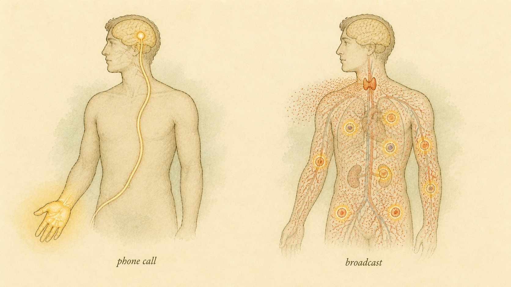
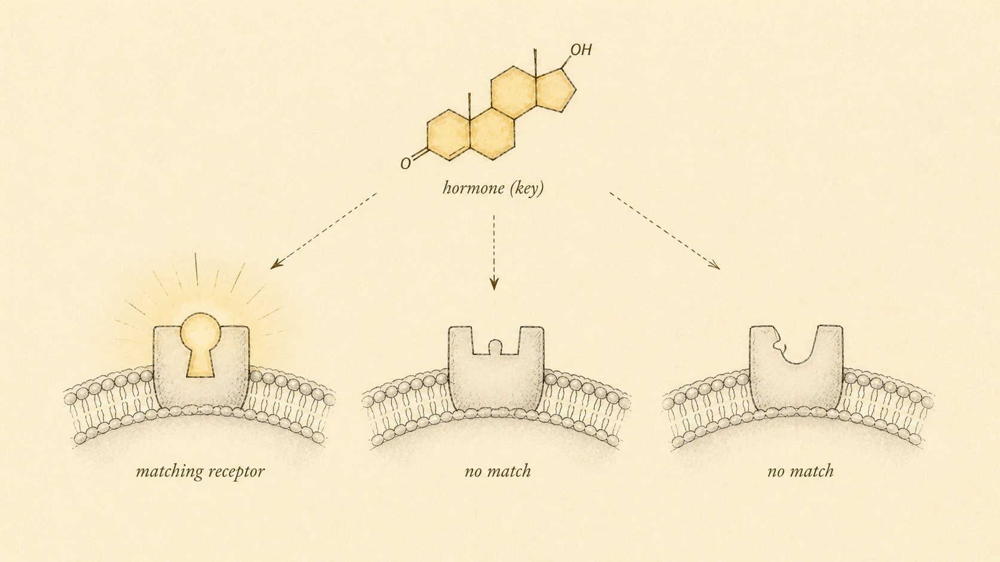
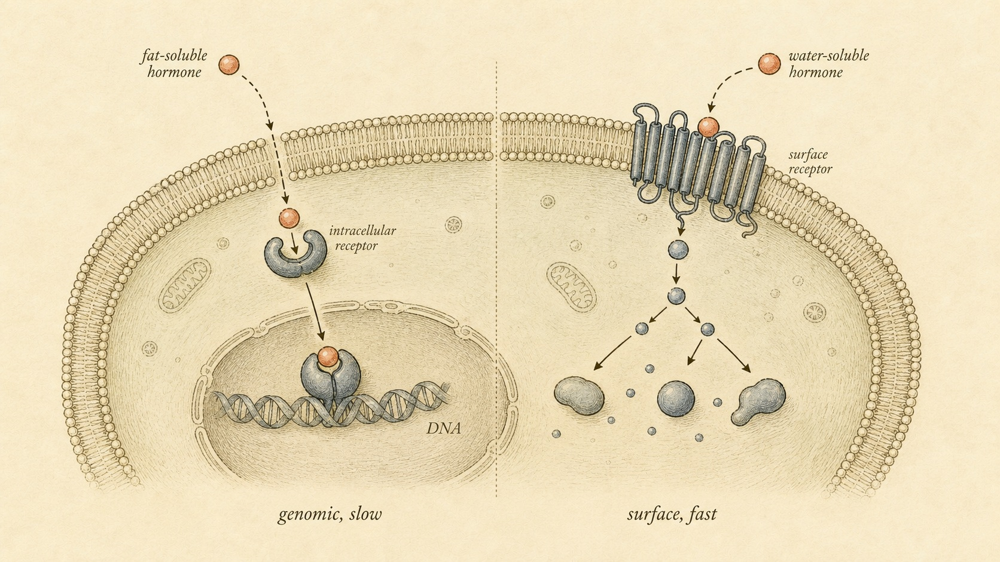

The Body's Chemical Mail System
The operating system underneath insulin, thyroid, testosterone, and every hormone you will ever study.
Picture two ways of getting an urgent message across a crowded city. The first is a phone call. You dial one specific number, the line connects you to exactly one person, and the conversation happens in a fraction of a second. The second is a radio broadcast. You speak into a transmitter and your voice floods every neighborhood at once, reaching anyone within range. But here is the catch: only the people who own a radio, tuned to your exact frequency, hear a thing. Everyone else goes about their day, deaf to a signal that is physically passing right through them.
That contrast is not just a metaphor. It is the single most important idea in this entire course. The phone call is your nervous system. The radio broadcast is your endocrine system. And the radio you have to own to hear the message has a real name in biology: a receptor. Master this one picture and you have the foundation for everything that follows, from why insulin resistance happens to why steroids take hours to work while adrenaline works in seconds.
Throughout this chapter you will follow one learner, Colin, a 34-year-old who signed up for this course after a run of blood work left him more confused than reassured. His results kept coming back "in range," yet the story he was told about them shifted every time. One source said his numbers proved he was healthy. Another sold him a supplement to "optimize" them. Colin is not a patient in this course and he is not a case to be solved. He is a stand-in for the honest confusion that hormone information creates, and by the end of the chapter you will understand his blood work better than most of the people who sold him things did. His story is a thread, not a diagnosis, and we will be careful about that difference.
Two Ways to Send a Message
Your body runs two great communication networks, and they solve the same problem in opposite ways. The problem is coordination. You are made of roughly thirty trillion cells, and they cannot each do whatever they want. When you stand up too fast, your heart has to speed up. When you eat, your gut, liver, and muscles all need to know that fuel is arriving. Something has to carry instructions between cells that may sit on opposite ends of your body.
The nervous system is the phone-call network. It is fast, wired, and point-to-point. A neuron fires an electrical signal down a physical cable, the axon, and that signal arrives at one specific destination in milliseconds. When you touch a hot stove, the message from fingertip to spinal cord to muscle travels faster than you can think about it. Precision and speed are the whole point. The wire goes where it goes and nowhere else.
The endocrine system is the radio-broadcast network. A gland releases a chemical, a hormone, directly into the bloodstream. From there the molecule travels everywhere your blood goes, which is everywhere. It does not aim. It floods the whole system and trusts that only the right cells are listening. This is slower, often by orders of magnitude, but it has a strength the nervous system lacks: a single broadcast can reach millions of cells across dozens of organs at once, and the message can keep echoing for minutes, hours, or even days.

Why have two systems at all?
Because speed and reach are a tradeoff. If you needed every cell in your body to be individually wired to a control center, the wiring would be impossibly bulky and metabolically expensive. The endocrine system gets around that by using a delivery network you already have, the blood, and outsourcing the addressing problem to the receiving cells. You do not need a wire to every target if the targets can recognize the message themselves.
The two systems are not actually rivals. They are deeply intertwined, and later in the course you will see the brain itself act as an endocrine organ through the hypothalamus and pituitary. But for now, hold the clean contrast in your head, because it sets up the question that defines hormone biology.
It helps to feel the scale of the coordination problem these systems solve. A typical adult body is built from roughly thirty trillion human cells, a figure that a careful 2016 re-estimate finally nailed down after decades of a much-repeated but wrong number (Sender et al., 2016). Thirty trillion is not a crowd you can micromanage. No control center could run a private wire to each cell, poll it, and issue individual orders. The endocrine solution is the only one that scales: publish a message into the shared bloodstream, and let each cell decide for itself whether the message is addressed to it. That single design choice, addressing on the receiving end rather than the sending end, is what makes a body of thirty trillion cells governable at all. Everything else in this chapter is a consequence of it.
There is a second reason two systems beat one. The nervous system is expensive to build and expensive to run, because wires cost material and electrical signaling burns energy continuously. Reserving that costly network for the messages that genuinely need millisecond timing, pulling a hand off a stove, catching your balance, and offloading everything slower onto the cheap broadcast channel is simply good engineering. Your body did not choose between speed and reach. It kept both, and assigned each to the jobs it suits.
What a Hormone Actually Is
Let us pin down the definition, because the everyday use of the word "hormone" is sloppy and you should not be. A hormone, in the classic sense, is a chemical messenger released by a gland into the bloodstream that travels to distant cells and changes their behavior by binding a specific receptor (Melmed et al., 2019). Three features matter in that sentence. It is secreted into circulation. It acts at a distance. And it works through a receptor, not by brute chemical force.
That last point is what separates a hormone from a poison. Cyanide also travels in your blood and changes how cells behave, but it does so by jamming machinery indiscriminately. A hormone is the opposite of indiscriminate. It carries an instruction that only the intended audience can read.
This is also why dose matters so strangely with hormones. They circulate at vanishingly low concentrations, often in the range of billionths of a gram per milliliter of blood, yet they produce enormous effects. A faint signal commands a loud response. That only works because the receiving cell is not relying on the hormone to do the work directly. The hormone is a key, and the cell already contains the engine. The key just decides whether the engine runs.
Because the signal is so faint, the body has to be equally careful about switching it off. A message that never ends is not a message, it is noise. So every hormone has a built-in expiry, its half-life, the time it takes for half of what is circulating to be cleared or broken down. Adrenaline is gone in a couple of minutes, which is exactly why a fright fades so quickly once the threat passes. Thyroid hormone lingers for days, which is why a thyroid dose is taken once daily and why thyroid problems change slowly. When you later wonder why one hormone acts in bursts and another holds a steady background level, half-life is usually the answer, and it is set by chemistry, not by wishful thinking.
Not every signal travels far
The classic definition above insists a hormone acts "at a distance," and that is the case worth learning first because it is the dramatic one. But the same signaling logic runs at shorter ranges too, and you should know the words so the later chapters do not surprise you. When a cell releases a messenger that acts on its immediate neighbors without ever entering the general circulation, that is paracrine signaling, a note passed to the person at the next desk rather than mailed across the country. When a cell releases a messenger that acts back on itself, that is autocrine signaling, a note you write to remind your own future self. Many of the most important control systems in the body, including the ones that govern the ovaries, the testes, the pancreas, and inflammation, run on paracrine chatter happening millimeters away. The broadcast metaphor still holds; it is just that some broadcasts are deliberately low-power, meant only for the room they are transmitted in.
None of this changes the core rule. Distance is a detail of delivery. The thing that decides who responds is still the receptor on the receiving cell. A learner who grasps that one rule can absorb paracrine and autocrine signaling as minor variations rather than new material, which is exactly how you should file them.
The specificity of hormone action is determined not by the hormone alone but by the presence of the appropriate receptor in target cells.
Nussey & Whitehead, Endocrinology: An Integrated Approach (2001)
What this means in practice
Here is what this means in plain terms. When people talk about "balancing their hormones," they usually imagine the hormone itself as the thing that matters most. But a hormone is only half of a conversation. The other half is whether your cells are listening, meaning whether they have working receptors and how many. You will meet this idea again and again. A normal hormone level with broken receptors can look exactly like a hormone deficiency. Keep both sides of the conversation in mind from now on.
Return to Colin for a moment. When he got his results, the number on the page was the amount of hormone floating in his blood on the morning of the draw. That number tells you nothing, by itself, about how loudly his cells were hearing the signal. It is the sender's side of the conversation printed on a page, with the receiver's side left blank. A great deal of the confusion sold to people like Colin lives in that blank. Nobody is measuring whether his cells are listening, so the story gets to be whatever the storyteller wants. You are learning to see the blank, which is the first step to not being fooled by it.
There is one more wrinkle worth planting now, because it will explain a specific thing about Colin's report later. A large fraction of some hormones, particularly the fat-soluble sex steroids and thyroid hormone, does not float free in the blood at all. It rides bound to carrier proteins made by the liver, and only the small unbound fraction can actually leave the blood and reach a receptor. The free hormone hypothesis, validated in careful experiments, holds that biological activity tracks the free concentration, not the total (Laurent et al., 2016). A person can have a high total level and an ordinary free level, or the reverse, because the carrier protein moved. This is why a single "total" number, the kind most people are handed, can be genuinely misleading, and why the professionals who interpret these results for a living look at more than one figure. You are not going to interpret anyone's labs in this course, but you should understand why one number is rarely the whole story.
Meet the Glands: Where the Broadcasts Originate
We have talked about the message and the listener. Now name the senders. A gland is simply an organ whose job is to manufacture and release a substance, and the ones that release hormones directly into the bloodstream are the endocrine glands. The word "endocrine" literally means "secreting inward," which is the whole distinction: an endocrine gland dumps its product into the blood that runs through it, not down a duct to the outside. Your sweat glands and salivary glands secrete outward through ducts and are not part of this story. The endocrine glands secrete inward, into circulation, and that is what puts their messages on the body-wide broadcast channel.
You do not need to memorize the whole roster today, and later chapters give the major players their own detailed treatment. But a quick orientation tour helps, because it turns an abstract "the endocrine system" into a set of real places with real jobs. Tucked at the base of the brain sit the hypothalamus and the pituitary, the command pair that translates the brain's needs into hormonal orders and that will get an entire chapter of their own. In the neck, wrapped around the windpipe, sits the thyroid, the body's metabolic pace-setter. Perched atop each kidney are the adrenal glands, which run the stress response and produce cortisol and adrenaline. Buried in the abdomen, the pancreas carries islands of endocrine tissue that make insulin and glucagon, the fuel-managing pair. And the gonads, the testes and ovaries, produce the sex hormones. That is the core map. Almost everything in this course happens at one of those addresses.
Here is a fact that trips people up, so meet it early: many organs that are famous for something else moonlight as endocrine glands. Fat tissue secretes leptin, a hormone that reports how much energy is stored. The stomach secretes ghrelin, a hunger signal. The heart secretes a hormone that helps manage blood pressure. Even bone and muscle release signaling molecules into the blood. The endocrine system is not a tidy set of dedicated organs off in a corner; it is a distributed network, and half the body is talking on the channel. When you later meet a "gut hormone" or a "fat hormone," do not treat it as an oddity. It is just another transmitter on the same broadcast band you are learning to read.
Receptor Specificity: The Tuning Problem
Now we can answer the question from the callout. A hormone floods the entire bloodstream, but it only changes the cells that carry a matching receptor. A receptor is a protein, shaped so that one particular hormone fits into it the way a key fits a lock. If a cell builds that receptor, it can hear the broadcast. If it does not, the same hormone washes past it doing nothing at all.
This is target specificity, and it is worth slowing down on because it overturns an intuition. The address is not written on the envelope. The hormone has no idea where it is going. The addressing happens entirely on the receiving end. A cell decides whether it is a target by choosing whether to display the receptor. Two cells sitting side by side, bathed in the identical hormone concentration, can have completely different responses simply because one carries the receptor and the other does not.
Consider thyroid-stimulating hormone, which you will study in depth later. It pours through your whole circulation, passing your muscles, your skin, your kidneys, all of it. But essentially only your thyroid gland responds, because essentially only your thyroid cells display the matching receptor. The instruction reaches everyone. Only one organ is tuned to receive it.

Here is where people get this wrong
People assume that if a hormone is high in the blood, its effects must be strong everywhere, and if it is low, its effects must be weak everywhere. Not necessarily. The effect at any given tissue depends on how many receptors that tissue is showing, and cells adjust their receptor counts constantly. When a cell is being shouted at by too much hormone for too long, it often pulls receptors off its surface to protect itself, a process called downregulation. The signal is loud, but the listener has turned down the volume. This exact mechanism sits at the center of insulin resistance, which gets its own chapter. File it away now.
It is worth being precise here, because "the receptor count changes" is really two mechanisms operating on two timescales, and the distinction matters. In the fast one, minutes after a receptor is over-stimulated, the cell tags it and drags it off the surface, temporarily muffling the response without destroying anything. That is desensitization, and it is reversible: quiet the signal and the receptors come back. In the slow one, over hours to days of relentless stimulation, the cell stops merely hiding receptors and starts genuinely destroying them, breaking them down and even dialing back the gene that builds new ones. That is true downregulation, and it does not reverse in an afternoon (Rajagopal & Shenoy, 2018). The practical upshot is that a system pushed hard for a long time does not just get temporarily quieter, it becomes harder to move at all, because the listening apparatus itself has been dismantled. Keep both timescales in view; you will need them the day we explain why insulin resistance builds slowly and unwinds even more slowly.
The mirror image happens too. Starve a cell of a signal it expects, and it often builds extra receptors, straining to catch whatever faint message remains. That is upregulation, and it is the reason a system deprived of a hormone can become almost hypersensitive to its return. Cells are not passive antennas. They are constantly re-tuning their own sensitivity based on how much signal they have been getting, which means the same blood level of a hormone can land very differently in a cell that has been starved of it versus one that has been flooded. Hold that idea. It quietly rewrites what a "normal level" even means.
Three Families, Sorted by Chemistry
Now we change the question. Instead of asking how hormones are addressed, we ask what they are made of, because structure dictates behavior. Almost every hormone in your body falls into one of three structural families, and once you know a hormone's family you can predict roughly how fast it acts, where its receptor sits, and how long its effects last. This is the single most useful classification in the whole course.
Steroid hormones
Steroid hormones are built from cholesterol. Cortisol, estradiol, testosterone, and aldosterone all belong here. The defining property is that they are fat-soluble, or lipophilic. Because cell membranes are themselves made of fat, steroids slip straight through the membrane like a drop of oil passing into oil. They do not need to knock on the door. They walk right in.
Once inside, a steroid binds a receptor that lives within the cell, often drifting in the cytoplasm or sitting in the nucleus. The hormone-receptor pair then travels to the DNA and acts as a switch on the genes themselves, turning specific genes on or off (Evans, 1988; Aranda & Pascual, 2001). This is the genomic mechanism: the hormone changes which proteins the cell manufactures. Ronald Evans's landmark 1988 work established that steroid and thyroid hormone receptors form a single superfamily of ligand-activated transcription factors, meaning proteins that are switched on by a hormone and then directly regulate gene expression (Evans, 1988).
Acting on genes is slow. Building new proteins takes time, often hours. But it is also powerful and long-lasting, because once the cell starts producing a new set of proteins, the effect persists well after the hormone is gone. Slow to start, slow to fade. That is the steroid signature.
Peptide and protein hormones
Peptide and protein hormones are chains of amino acids, the same building blocks that make all proteins. Insulin, glucagon, growth hormone, and most of the pituitary hormones live here. They are water-soluble, which is convenient for traveling in blood but creates a problem at the target. A water-soluble molecule cannot pass through the fatty cell membrane. It is stuck outside.
So peptide hormones do not enter the cell. They knock on the door. The hormone binds a receptor embedded in the cell surface, and that receptor relays the message inward through a relay of internal molecules called second messengers. The hormone never crosses the threshold. It hands its instruction to a doorman, who runs the message inside.
The dominant doorman family is the G protein-coupled receptor, or GPCR, a protein that threads back and forth through the membrane seven times. When a hormone binds the outside, the receptor activates a G protein inside, which produces a burst of a second messenger such as cyclic AMP (Liu et al., 2024). This discovery has deep roots: Earl Sutherland won the Nobel Prize in 1971 for discovering cyclic AMP, and Rodbell and Gilman won in 1994 for the G proteins themselves (Liu et al., 2024). Because this is a relay of existing molecules rather than the manufacture of new proteins, it is fast, often producing effects within seconds (Calebiro et al., 2021).
Not every peptide hormone uses a GPCR, and the exception is worth naming because it is the one you will meet most: insulin. The insulin receptor is a different kind of doorman, an enzyme-linked receptor that, once insulin binds outside, switches on a chain of internal messengers that ends in a very physical result, moving glucose transporters to the cell surface so sugar can enter (Leto & Saltiel, 2012). The detail is not the point for now. The point is the shape of the logic: a water-soluble hormone stays outside, hands its message to a surface receptor, and a cascade inside does the work. Whether the doorman is a GPCR or an enzyme-linked receptor, the water-soluble family always signals from the doorstep, never from inside the house. When insulin gets its own chapter, this cascade is where the story of insulin resistance begins, at the point where a healthy relay stops relaying.
Amine hormones
Amine hormones are the small odd family, each built by modifying a single amino acid, usually tyrosine. This family contains two members that behave in almost opposite ways, which makes it a useful teaching case. Adrenaline (epinephrine) is water-soluble and acts like a peptide, binding surface receptors and triggering fast second-messenger cascades, which is exactly why a jolt of adrenaline hits you in seconds (Calebiro et al., 2021). Thyroid hormone, by contrast, is fat-soluble and acts like a steroid, entering the cell and working on genes, which is why thyroid effects build slowly over days (Evans, 1988).
So the amines remind you of something important: the deepest divide is not really the three names. It is solubility. Fat-soluble hormones get inside and work on genes, slowly and durably. Water-soluble hormones stay outside and work through surface receptors, quickly and briefly. Everything else is detail.

This is why it matters
When you later ask "how fast does this hormone act, and how long does it last," you usually do not need to memorize the answer. You can derive it. Is the hormone fat-soluble and gene-acting, like cortisol or thyroid hormone? Then expect a slow, sustained effect. Is it water-soluble and surface-acting, like insulin or adrenaline? Then expect a fast, shorter effect. The table that follows is not the lesson. The reasoning is the lesson.
This is also why the marketing language around hormones so often falls apart on contact with chemistry. When something promises to "instantly balance your hormones," ask which hormones and by what route. If the target is a gene-acting steroid, "instant" is chemically impossible, because the effect runs through building new proteins and that takes hours no matter what. If the claim is that a swallowed molecule will raise a hormone that the gut would digest before it ever reached the blood, the claim is defeated before it starts. You do not need a pharmacology degree to catch these. You need the family and the solubility, both of which you now have. Colin, armed with just this much, could have looked at half the labels in his cabinet and known which promises were even physically possible.
Negative Feedback: The Thermostat Logic
One question remains. If glands keep broadcasting hormones, what stops the broadcast from running out of control? The answer is the regulatory principle that makes the entire endocrine system stable: negative feedback. The output of a system shuts off its own production. It is the same logic as a home thermostat, and the analogy is exact, so it is worth walking through.
A thermostat has a target temperature, say 70 degrees. When the room drops below it, the heater switches on. As the room warms, the rising temperature feeds back to the thermostat, and when it reaches the target the heater switches off. The output of the system, heat, is exactly what turns the system off. The result is a temperature that hovers in a narrow band, self-correcting in both directions.
Endocrine axes work identically. A gland releases a hormone. The hormone produces its effect, and that effect, or the hormone level itself, feeds back to the gland and tells it to stop secreting. As the hormone does its job, it removes the very signal that called for it. This keeps hormone concentrations clamped within tight ranges despite constant disturbance from food, stress, sleep, and activity (Shi et al., 2025). Computational modeling of endocrine axes confirms that this negative feedback is essentially universal across hormone systems and is the structural reason hormone levels stay within their narrow homeostatic windows (Shi et al., 2025).
The chain version: axes
In real life the loop usually has more than one stage. The classic arrangement is a three-tier chain called an axis. The hypothalamus signals the pituitary, the pituitary signals a downstream gland such as the thyroid or adrenal, and that gland releases the final hormone. The final hormone then feeds all the way back up the chain, suppressing both the pituitary and the hypothalamus. You will draw this exact structure many times, for the thyroid axis, the adrenal stress axis, and the reproductive axis. The drawing changes; the logic never does.
When the loop runs the other way
Negative feedback is the rule, but there is a rare and dramatic exception you should meet now so it does not startle you later: positive feedback. Here the output of a system, instead of shutting production off, cranks it higher, so a small signal snowballs into a large one. This sounds like a design flaw, because a runaway loop has no natural brake, and indeed the body uses positive feedback only in short, decisive bursts where an all-or-nothing surge is exactly what is wanted.
The two textbook cases are worth knowing by name. In the menstrual cycle, rising estradiol normally suppresses the reproductive axis, ordinary negative feedback, until it crosses a threshold, at which point the feedback flips sign and estradiol begins driving its own upstream signals higher, producing the sharp luteinizing hormone surge that triggers ovulation (Herbison, 2022). The loop deliberately runs away, does its one job, releases an egg, and then collapses back to negative feedback. The second case is childbirth: pressure on the cervix triggers oxytocin release, oxytocin strengthens contractions, stronger contractions push harder on the cervix, and the cycle escalates until delivery ends it. In both cases the escape from the loop is built in. Positive feedback in the body is a controlled demolition, never an accident.
Why teach the exception in a foundations chapter? Because it sharpens the rule. Almost everything in the endocrine system is a self-limiting negative loop defending a set point, and the handful of positive loops stand out precisely because they are engineered to be brief and self-terminating. If you ever find yourself imagining a hormone that just keeps climbing forever with nothing to stop it, you are almost certainly picturing something the body does not actually do.
The set point is not a single number
One more refinement, because it dissolves a common confusion. A thermostat holds one temperature, but endocrine set points are not flat lines; many of them move on a schedule. Cortisol is the clearest example. It is not meant to sit at one level all day. Its set point rises in the pre-dawn hours to peak shortly after waking, then falls across the day to a nighttime low, a daily rhythm driven by the body's internal clock working through the stress axis (Nader et al., 2010). This matters enormously for anyone trying to interpret a hormone number, because the same value can be perfectly normal at 7 a.m. and clearly abnormal at 10 p.m. A measurement without a timestamp is often meaningless. The feedback system is still defending a set point; the set point is simply a moving target that the clock repositions through the day.
This is a real trap that snared Colin. One of his results was flagged as "elevated," but it had been drawn late in the afternoon and compared against a morning reference range. The number was not the story; the timing was. He had no way to know that, and nobody told him. You now do, which is the difference between reading a lab result and being sold one.
What this means in practice
In practice, this means your body is built to defend a set point, not to be pushed in one direction forever. Flood the system with a hormone from outside and the matching gland quietly powers down, because the feedback loop reads the high level and concludes its job is already done. Most of the dramatic things that go wrong in hormone health, and a fair amount of what supplements and medications do, can be understood as either breaking a feedback loop or fooling it. Learn the loop and you will stop being surprised.
This is the lens Colin needed and did not have. One of the products marketed to him promised to "boost" a hormone by supplying more of its finished form. Run that through thermostat logic and the flaw is obvious: pour the finished hormone in from outside, and the gland that normally makes it reads the high level, concludes its work is done, and powers down its own production. In some cases the external supply simply replaces the internal one, and the person is no better off, sometimes worse, because the loop has been fooled into idling a gland that was working fine. This is not a fringe concern. It is the well-documented reason that taking certain hormones from outside can suppress the body's own output, a real effect you will study in detail in later chapters. Colin did not need to know the biochemistry of every product. He needed the single question this section hands you: does this fool a feedback loop, and if so, what does the loop do next?
Putting It Together
You now hold four ideas that interlock. First, the endocrine system is a broadcast, not a phone call, slow and body-wide where the nervous system is fast and wired. Second, the broadcast only reaches cells carrying the matching receptor, so specificity lives in the listener, not the message. Third, a hormone's chemical family, really its solubility, predicts whether it acts slowly on genes from the inside or quickly through surface receptors from the outside. Fourth, negative feedback keeps the whole system clamped to a stable set point.
None of this is optional later. Receptor specificity returns the moment we explain insulin resistance. The steroid-versus-peptide split organizes the sex hormones and the adrenals. Negative feedback becomes the spine of every axis you will draw. From here on, when you meet a new hormone, you should reflexively ask three questions: which family, where is its receptor, and how does its loop shut off. You can answer most of that from chemistry alone, which is exactly the power this foundation gives you.
Notice what this foundation is not. It is not a shortcut to reading anyone's blood work, your own included. Understanding that a set point moves through the day, or that a total number can hide a normal free level, makes you a better reader of the ideas, not a substitute for the person trained to interpret the numbers. That distinction is important enough that it deserves its own section, so let us draw the line clearly before we close.
Where This Understanding Ends
Everything in this chapter is general education about how a healthy system is built to work. That is a genuinely useful thing to own, and it is also a bounded thing, so let us be precise about the boundary. Understanding the machinery is not the same as operating it on a person, and the gap between those two is exactly where careful learners stay out of trouble.
It is general education to understand that hormones broadcast through the blood, that receptors decide who listens, that chemistry predicts speed and duration, and that feedback loops defend set points. It is general education to know why a lab number needs a timestamp, or why a single total value can mislead. None of that requires a license, and all of it makes you harder to fool.
It is not general education to decide that a given person's hormones are "off," to interpret their blood work, to name a condition, or to recommend that they start, stop, or change a hormone, a supplement, or a medication. Every endocrine condition, from an underactive thyroid to diabetes to a pituitary problem, is diagnosed by clinicians, never via this course. The symptoms that might make someone wonder about a hormone problem, unexplained fatigue, dramatic weight change, changes in mood or libido, excessive thirst, are signs that warrant medical evaluation, not signals for a learner to act on. They point toward a qualified professional, not toward a supplement aisle.
Hold onto why this boundary is protective rather than limiting. The people who sold Colin the most confident stories were the ones least burdened by this line. Confidence sells; caution rarely does. The learner who knows exactly where their understanding ends is more trustworthy than the one who does not, because they will not turn a real symptom into a self-directed experiment. Knowing the edge of your knowledge is not a weakness in this field. It is the single most professional thing you can carry.
Case Study: Colin and the Number That Looked Normal
Run Colin's situation through this chapter and most of the confusion dissolves, not into a diagnosis, which is not ours to give, but into a set of honest questions the marketing had skipped. Start with the red flag. It was a cortisol value drawn in the late afternoon and compared against a reference range built for morning draws. Cortisol has a strong daily rhythm, high after waking and low by evening (Nader et al., 2010), so an afternoon value sitting below a morning range is not a "crash." It is the expected shape of the curve, measured at the wrong point on it. The flag was an artifact of timing, and the timing was never explained to him.
Move to the yellow flags. Two were "total" measurements of hormones that ride mostly bound to carrier proteins, and only the free fraction actually reaches receptors (Laurent et al., 2016). A total number alone cannot tell you whether the free, active level is high, low, or ordinary, because the carrier protein could have shifted for reasons that have nothing to do with the gland. The report presented totals as if they were the whole truth, which they structurally are not. This is not Colin failing to understand. It is a genuinely incomplete picture being sold as a complete one.
Now the supplement bundle. Several products promised to "boost" specific hormones by supplying finished hormone or precursors. Thermostat logic flags the problem instantly: if a supplement genuinely raised a hormone that runs on a feedback loop, the matching gland would read the higher level and quietly reduce its own output, so at best the person trades internal production for external supply, and at worst fools a working loop into idling. And the chemistry flags a second problem: a swallowed molecule meant to act like a peptide hormone would generally be digested before it reached the blood at all, which is why so many "hormone" supplements cannot do what their labels imply. Colin did not need a lab to see this. He needed the two questions this chapter hands every learner: does this fool a feedback loop, and is this route even chemically possible?
Here is the part that matters most, and it is where the boundary from the last section does real work. Nothing above tells Colin whether he is healthy or unwell. His tiredness is real and could have many causes, some trivial and some worth a professional look. The correct move for Colin is not to buy the bundle and not to trust a forum verdict, in either direction. It is to take his genuine symptom, persistent fatigue, to a clinician who can order the right tests at the right time of day, interpret free and total values together, and place them against his actual history. This chapter did not diagnose Colin and could not. What it did was strip away the false certainty on both sides, the "you are crashing" and the "ignore it," and leave him with accurate questions and a clear sense of who should answer them. That is exactly what general education is for, and exactly where it stops.
Key Takeaways
- The nervous system is a wired, fast, point-to-point phone call; the endocrine system is a slow, body-wide radio broadcast carried by the blood.
- A hormone is a chemical messenger secreted into circulation that acts at a distance through a specific receptor, not by brute chemical force, which is why tiny concentrations produce large effects.
- Specificity is decided by the receiving cell: only cells displaying the matching receptor respond, and cells adjust receptor numbers, which previews insulin resistance.
- Structure dictates behavior. Fat-soluble hormones (steroids, thyroid hormone) enter cells and act on genes, slowly and durably; water-soluble hormones (peptides, adrenaline) act through surface receptors and second messengers, quickly and briefly.
- Negative feedback is thermostat logic: a hormone's output suppresses its own production, holding levels in a narrow band and forming the backbone of every endocrine axis. Positive feedback is the rare, deliberately brief exception, as in ovulation and childbirth.
- Set points can move on a schedule (cortisol has a strong daily rhythm), so a hormone number without a timestamp is often meaningless, and much of a hormone rides bound to carrier proteins where only the free fraction acts.
- This course builds understanding, not a license to diagnose or treat. Endocrine conditions are diagnosed by clinicians, and symptoms like unexplained fatigue or weight change warrant medical evaluation, not self-directed action.
Next class we take this operating system and run a single program on it: insulin. You will see receptor specificity become the difference between a healthy response to a meal and insulin resistance, watch a peptide hormone fire its surface cascade in real time, and learn why the body's most familiar metabolic signal is also the one most easily ignored when its listeners turn down the volume.
References
Aranda, A., & Pascual, A. (2001). Nuclear hormone receptors and gene expression. Physiological Reviews, 81(3), 1269-1304. https://doi.org/10.1152/physrev.2001.81.3.1269
Calebiro, D., Koszegi, Z., Lanoiselée, Y., Miljus, T., & O'Brien, S. (2021). G protein-coupled receptor-G protein interactions: A single-molecule perspective. Physiological Reviews, 101(3), 857-906. https://doi.org/10.1152/physrev.00021.2020
Evans, R. M. (1988). The steroid and thyroid hormone receptor superfamily. Science, 240(4854), 889-895. https://pubmed.ncbi.nlm.nih.gov/3283939/
Goodman, H. M. (2021). Goodman's basic medical endocrinology (5th ed.). Academic Press.
Herbison, A. E. (2022). Neuroendocrine mechanisms underlying estrogen positive feedback and the LH surge. Frontiers in Neuroscience, 16, 953252. https://doi.org/10.3389/fnins.2022.953252
Laurent, M. R., Hammond, G. L., Blokland, M., Jardí, F., Antonio, L., Dubois, V., Khalil, R., Sterk, S. S., Gielen, E., Decallonne, B., Carmeliet, G., Kaufman, J.-M., Fiers, T., Huhtaniemi, I. T., Vanderschueren, D., & Claessens, F. (2016). Sex hormone-binding globulin regulation of androgen bioactivity in vivo: Validation of the free hormone hypothesis. Scientific Reports, 6, 35539. https://doi.org/10.1038/srep35539
Leto, D., & Saltiel, A. R. (2012). Regulation of glucose transport by insulin: Traffic control of GLUT4. Nature Reviews Molecular Cell Biology, 13(6), 383-396. https://doi.org/10.1038/nrm3351
Liu, S., Anderson, P., Wang, Y., & Zhang, L. (2024). G protein-coupled receptors: A century of research and discovery. Circulation Research, 134(8), 1037-1060. https://doi.org/10.1161/circresaha.124.323067
Mauvais-Jarvis, F., Lange, C. A., & Levin, E. R. (2022). Membrane-initiated steroid signaling. Endocrine Reviews. https://www.endocrine.org/journals/endocrine-reviews/membrane-initiated-steroid-receptors-signaling
Melmed, S., Koenig, R., Rosen, C. J., Auchus, R. J., & Goldfine, A. B. (2019). Williams textbook of endocrinology (14th ed.). Elsevier.
Nader, N., Chrousos, G. P., & Kino, T. (2010). Interactions of the circadian CLOCK system and the HPA axis. Trends in Endocrinology & Metabolism, 21(5), 277-286. https://doi.org/10.1016/j.tem.2009.12.011
Nussey, S. S., & Whitehead, S. A. (2001). Endocrinology: An integrated approach. BIOS Scientific Publishers. https://www.ncbi.nlm.nih.gov/books/NBK22/
Rajagopal, S., & Shenoy, S. K. (2018). GPCR desensitization: Acute and prolonged phases. Cellular Signalling, 41, 9-16. https://doi.org/10.1016/j.cellsig.2017.01.024
Sender, R., Fuchs, S., & Milo, R. (2016). Revised estimates for the number of human and bacteria cells in the body. PLOS Biology, 14(8), e1002533. https://doi.org/10.1371/journal.pbio.1002533
Shi, Z., Wang, H., Li, J., & Conolly, R. B. (2025). Interference with systemic negative feedback as a potential mechanism for nonmonotonic dose-responses of endocrine-disrupting chemicals. Toxicological Sciences. https://doi.org/10.1093/toxsci/kfaf060